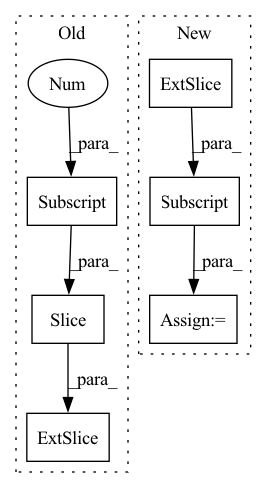

Pattern ID :27400

Before Change
preds = rearrange(logits, "b ... c -> b c (...)")
labels = rearrange(ids, "b ... -> b (...)")
labels = labels[:, :preds.shape[-1]]
loss = F.cross_entropy(preds, labels, ignore_index = self.pad_id)
return loss
After Change
return logits
logits = logits[..., :-1, :]
preds = rearrange(logits, "b ... c -> b c (...)")
labels = rearrange(ids, "b ... -> b (...)")
loss = F.cross_entropy(preds, labels, ignore_index = self.pad_id)
In pattern: SUPERPATTERN
Frequency: 3
Non-data size: 6
Instances
Fragment ID: 81483023
Project Name: lucidrains/rq-transformer
Commit Name: 56a8e24814d90cebb03454d9feed0bff4bee69ba
Time: 2022-04-12
Author: lucidrains@gmail.com
File Name: rq_transformer/hierarchical_causal_transformer.py
M Class Name: HierarchicalCausalTransformer
N Class Name: HierarchicalCausalTransformer
M Method Name: forward(3)
N Method Name: forward(3)
M Parent Class: nn.Module
N Parent Class: nn.Module
M File Name: rq_transformer/hierarchical_causal_transformer.py
N File Name: rq_transformer/hierarchical_causal_transformer.py
M Start Line: 279
M End Line: 329
N Start Line: 293
N End Line: 344
'>
Before Change
// un-blocking the predicted wavs for stoi and pesq evaluation
num_blocks, wav_size = data_sizes
clean_wavs = clean_wavs_orig
predict_wavs = predict_wavs.reshape(
clean_wavs.shape[0], num_blocks * 16384
)[:, : clean_wavs.shape[1]]
if stage != sb.Stage.TRAIN:
// Evaluate speech quality/intelligibility
After Change
predict_wavs = predict_wavs.reshape(self.batch_current, -1)
clean_wavs = clean_wavs.reshape(self.batch_current, -1)
predict_wavs = predict_wavs[:, 0 : self.original_len]
clean_wavs = clean_wavs[:, 0 : self.original_len]
self.stoi_metric.append(
batch.id, predict_wavs, clean_wavs, lens, reduction="batch"
'>
Fragment ID: 81483021
Project Name: speechbrain/speechbrain
Commit Name: c91d417913af7aef5b1cf8937fb9d14754b5daa4
Time: 2021-07-13
Author: mirco.ravanelli@gmail.com
File Name: recipes/Voicebank/enhance/SEGAN/train.py
M Class Name: SEBrain
N Class Name: SEBrain
M Method Name: compute_objectives_g3(8)
N Method Name: compute_objectives_g3(9)
M Parent Class: sb.Brain
N Parent Class: sb.Brain
M File Name: recipes/Voicebank/enhance/SEGAN/train.py
N File Name: recipes/Voicebank/enhance/SEGAN/train.py
M Start Line: 60
M End Line: 121
N Start Line: 71
N End Line: 128
'>
Before Change
psi_out = self.modules.psi(f_I) // generate nmf activations
// cut the length of psi
psi_out = psi_out[:, :, : Xs.shape[-1]]
// psi_out = psi_out.permute(0, 2, 1)
reconstructed = self.hparams.nmf(
After Change
psi_out = self.modules.psi(f_I) // generate nmf activations
// cut the length of psi
psi_out = psi_out[:, :, : X_stft_power.shape[1]]
// psi_out = psi_out.permute(0, 2, 1)
reconstructed = self.hparams.nmf(
psi_out
'>
Fragment ID: 81483024
Project Name: speechbrain/speechbrain
Commit Name: c0348188064f486d48890e95be305ffd87eb2edb
Time: 2022-11-20
Author: me@francescopaissan.it
File Name: recipes/ESC50/classification/train_interpreter.py
M Class Name: InterpreterESC50Brain
N Class Name: InterpreterESC50Brain
M Method Name: compute_forward(3)
N Method Name: compute_forward(3)
M Parent Class: sb.core.Brain
N Parent Class: sb.core.Brain
M File Name: recipes/ESC50/classification/train_interpreter.py
N File Name: recipes/ESC50/classification/train_interpreter.py
M Start Line: 107
M End Line: 131
N Start Line: 107
N End Line: 138